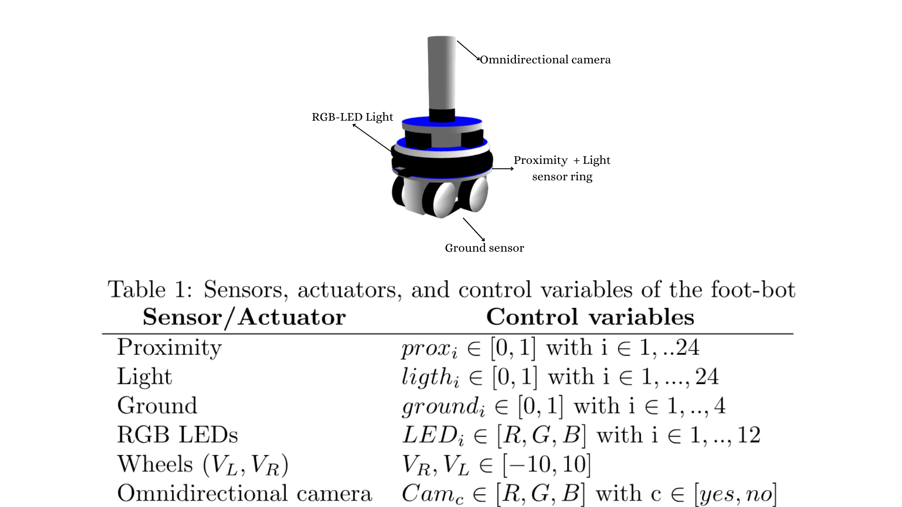

Automating the evaluation of the scalability, flexibility, and robustness of collective behaviors for robot swarms
We have created an experimental environment designed for robot swarms, integrating a repository of collective behaviors,
a mission generator, and an experimental protocol to study robot swarms and their properties in various simulated scenarios.
It facilitates the execution, analysis, and generalization of results, promoting
standardization and reproducibility in swarm robotics research.
The environment consists of the following key stages, shown in the next figure.

Here you can find more information about the experimental environment.
Scenarios
The environment is be able to generate five types of scenarios in three different sizes (small, medium, big).

Collective Behaviors and Missions
In most swarm algorithms, individuals perform according to local rules and the overall behavior emerges organically from
the interplay of the individuals of the swarm. Translated to the swarm robotics domain, individual robots exhibit a
behavior that is based on a local rule set which can range from a simple reactive mapping between sensor inputs and
actuator outputs to elaborate local algorithms. Typically, these local behaviors incorporate interactions with the
physical world, including the environment and other robots. Each interaction consists of
reading and interpreting the sensory data, processing this data, and driving the actuators accordingly. Such a sequence
of interactions is defined as basic behavior that is repeatedly executed, either indefinitely or until a desired state
is reached. These collective behaviors are basic behaviors of a swarm that could be combined to tackle
complex real-world applications as, for example, foraging or construction.
The environment can contemplate 4 types of missions:
Exploration, Aggregation, pattern formation and collective
decision making
Exploration
Random walk can be defined as the behavior in which a robot moves without aiming a particular trajectory. In most random walk methods, changes in the direction of movement of the robots occur when they interact with other robots or objects in the environment. The selection of a direction of movement can follow deterministic or stochastic rules. In many cases, robots also embed obstacle avoidance behaviors to safely navigate in the environment.
Aggregation
Aggregation is a group behavior in which the individuals approach to each other and form clusters. In nature, for
example, bees aggregate in the hive and school of fish remain together in single clusters. In swarm robotics,
aggregation behaviors are widely study as they determine the ability of the robots to remain together as a group. Robots
can aggregate either because they perceive a region of interest to aggregate in the environment—like the bees aggregate
in the hive, or because they sense other robots that are already forming a cluster—like the school of fish.
Pattern formation
A pattern is an arrangement of objects displaying mathematical, geometric or statistic relationships (e.g., atoms
organized in molecules, and molecules that in a big scale can form crystals). In swarm robotics, robots can form
patterns by strategically positioning themselves in regard to the position of other robots they perceive. By following
simple positioning rules at the individual level, a robot swarm can distributed itself in the form of organized
structures.
Robot pattern formation is useful to perform tasks such as uniformly covering a region of interest, establishing
specific lattice or network topologies, and performing collective motion (known as flocking in the context of swarm
robotics).
Collective decision making
These behaviors allow the robots in a swarm to take a common choice on a given issue. Collective decision-making deals with how robots influence each other when making choices. The desired outcome of consensus achievement is that all the robots of the swarm eventually converge towards a single decision among the possible alternatives.
Experiments
The experimental environment automatically evaluates control software instances through the possible configurations of the mission generator.
First, experimental parameters are defined: mission type, arena size and shape, number of robots, and control software.
Then, the experimental environment configures and generates the experiment automatically according to the established parameters.
During the simulation, data generated by the simulator is recorded until all considered configurations are completed.
In the experiments, the experimental environment was used to automatically evaluate the performance and properties of the swarm across all planned missions, varying the available parameters in the mission generator.
For each mission, two control instances (A and B) were evaluated, and each control instance was assessed 10 times for each problem to obtain statistical information.
Two types of experiments were conducted: one under normal conditions (without faults) and another with different percentages of faults in the robot swarm (10\%, 20\%, 30\%).
Faults are induced by forcing a certain percentage of robots to stop completely and not operate.
Each evaluation was performed for five different arena sizes, and in each case, the number of robots was set according to the defined parameters.
After conducting the experiments, metrics are automatically obtained to evaluate both mission performance and swarm properties.
These results are crucial for understanding how robot swarms behave in different scenarios and how their capabilities can be improved.
Here you can see a brief report of the result of experiments (the report is in Spanish and it is generate by the experimental environment). Remember that all data set is available into the project folder of the repository. Feel free that downland all material for develop your own experiments all source and code is available.
Pick up which report you can see.
Code and installation instructions are available for download here.